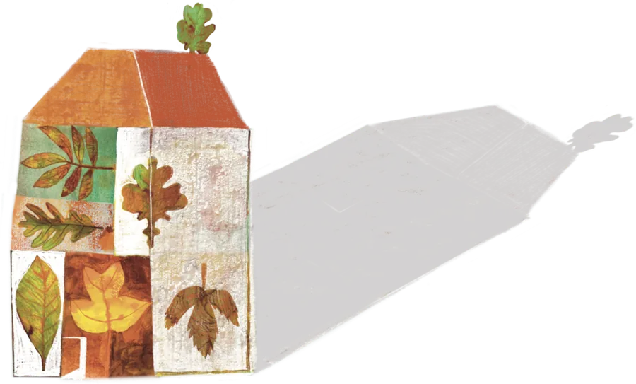

I mondi disegnati di BaruchStorie illustrate
Yan e l’Orso
Le pareti di una yurta che si fanno pagina
- Committente
- Per Molino Rosenkranz
- Tecnica
- mista, acrilico e digitale
Per Molino Rosenkranz ho disegnato una storia stampata su stoffa, pensata per avvolgere i piccoli spettatori all’interno di uno spazio circolare e protetto.
Un allestimento dove l’illustrazione diventa scenografia e la stoffa si fa tenda tesa verso l’immaginario, per dare corpo ad una narrazione teatrale intima e pulsante.